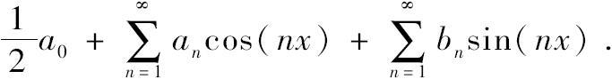
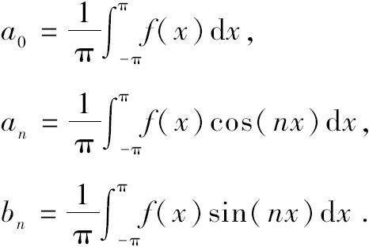
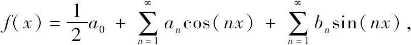
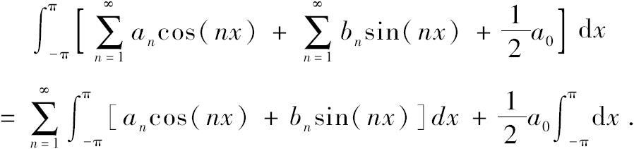

在一个棘手的领域引进一种新的工具常常会产生一连串的卓越成果．1822年让·弗朗索瓦·商博良（Jean Francois Champollion）对罗塞塔石碑（Rosetta stone）的解读使埃及古物学领域焕发了生机．研究者们突然能够翻译在埃及遗物中发现的象形文字．在同一年，傅里叶发表了他的开创性著作《热的解析理论》，这部著作为19世纪30年代以后纯粹数学与数学物理领域的重大突破铺平了道路．
这些新工具的同时出现并非偶然．作为商博良的庇护者，傅里叶是法国科学考察队的领导者，法国科学考察队于1799年发现了罗塞塔石碑．回顾傅里叶的一生，他是一个数学物理学家，但他作为埃及古物学者以及富有才干的行政官员的声望更大．今天，我们通过以他名字命名的数学工具记住了他．
1768年的春分点预示着又一个春季在法国的到来．傅里叶在这一天出生于距巴黎东南约一百公里的欧塞尔（Auxerre）镇．傅里叶的父亲与他的第二个妻子生下的子女中有12个幸存者，其中傅里叶排行第九．傅里叶的父亲与他的首任妻子有3个小孩．
傅里叶的父母在他九岁生日之前相继去世，除此以外，对傅里叶童年的境况知之不多．一位女士挽救了不幸遭遇中的傅里叶，她把傅里叶送进了皇家军事学校就读，这是一所由本笃会管理的本地军事学校．就读期间他表现出了对数学的兴趣，他把所有的业余时间都花在了数学上，同时他还为将来当一名军官作积极的准备．1787年他从当地的军事学校毕业，他希望能够在巴黎蒙泰居镇的本笃会修士学院（Benedictine College de Montaigu）继续他的学业，但由于某些原因他被拒绝了．
当一名军官的愿望破灭后，傅里叶走上了另一条能够使法国年轻人具有光明前景的道路：做一名教士．他成为靠近奥尔良（Orleans）市弗勒里（Fleury）镇本笃会大教堂的见习教士．在短期内，男修道院长认识到了傅里叶的聪明才干，他让傅里叶掌管教堂的教学计划，这对于为取得教士职位而正在学习的傅里叶来说是一项艰巨的任务．然而不久傅里叶开始怀疑自己是否真的具有做教士的才能．他渴望从事数学与物理学的深入研究，在给朋友的一个便条中他清晰地表明了这一点：“昨天是我21岁的生日，牛顿（Newton）和帕斯卡（Pascal）在这个年龄时都已经取得了不朽的成就．”
傅里叶的首项重要的数学研究是在大教堂完成的．1789年，他向巴黎的科学院提交了关于方程理论的一篇论文．著名的数学家勒让德（Adrien-Marie Legendre）和蒙日（Gaspard Monge）推荐这篇论文在秋季发表．然而，1789年6月14日巴士底监狱发生了暴动，法国革命开始，这篇论文的发表搁浅了．
法国革命对傅里叶的冲击绝不仅仅局限于其有关方程理论的论文没有发表，不久后傅里叶离开了大教堂．他回到了他的家乡去皇家军事学校教哲学、历史、修辞学，以及数学等学科．
革命的氛围对傅里叶产生了影响，他后来写道：
傅里叶热情地行动起来并参加了欧塞尔镇的地方监管委员会，这个委员会负责政府政令的执行．不幸的是傅里叶还参加了当地的平民社团，这个社团和革命性的雅各宾党（Jocobin party）结为联盟．雅各宾党的领导人，特别是罗伯斯庇尔（Robespierre）相信一个强势的集权的政府是巩固革命成果所必需的．1793年年中，雅各宾党把宽容的吉伦特党（Girondist party）的成员从国民大会中清理出去．
傅里叶由于在欧塞尔镇平民社团大会上的卓越演讲而众所周知．在一次会议上，他呼吁每一个男人去法国军队服役，他的演讲是如此的富有感染力，以至于志愿者人数超过了当地服役的配额要求．他还在恐怖统治中竭力保护欧塞尔镇的公民，罗伯斯庇尔和他的公共安全委员会在法国实施了恐怖统治．1794年，傅里叶尖刻地批评了作为他的同伴的地方官员的腐败，公共安全委员会于是颁布了一条逮捕傅里叶并把他送上断头台的法令．
傅里叶回到巴黎为自己辩护，但是他的辩护是徒劳的．当他回到家乡时，地方监管委员会也发布了逮捕并处死他的法令，但公众的强烈抗议使得这条法令得以废止．8天以后，傅里叶被关押起来，在巴黎公共安全委员会的重压下，拘捕傅里叶的法令重新生效．
欧塞尔镇的居民再一次聚集起来支持傅里叶．他们派遣了一个代表团和公共安全委员会中的罗伯斯庇尔的同僚克劳德路易斯（Claude-Louis St Just）会谈．经过不懈的努力，他们说服了克劳德路易斯释放傅里叶．然而不久，这一切都无关紧要了．罗伯斯庇尔、克劳德路易斯以及其他的雅各宾党的领导人都被拘捕并处死了，恐怖统治忽然宣告结束．紧随其后的就是一个大赦，傅里叶也被释放了．
雅各宾控制的国民大会在高等教育领域给后人留下了一个遗产，这个遗产对傅里叶的生涯产生了深刻而又积极的影响．在1794年，为了适应新的革命环境，雅各宾控制的国民大会决定建立巴黎师范学校实施大学层次的教育．国民大会力求使巴黎师范学校成为不同于由君主政体建立的做专科教育的高等教育学校，如矿业学校．与之形成鲜明对照的是，巴黎师范学校由法国最好的学者开设了覆盖面很广的课程．数学教授包括声名显赫的数学家拉格朗日（Joseph Louis Lagrange）、拉普拉斯（Pierre Simon Laplace）、蒙日．傅里叶的家乡很快选送傅里叶进入巴黎师范学校．
巴黎师范学校比其他法国革命的创建物还要短命．它于1795年1月建立，5月就已经关门了．对傅里叶来说幸运的是，就在这么短暂的时间内他已给蒙日留下了很深的印象．
在1794年，国民大会建立了多科工艺学校以求为将来指挥军队的学生提供工程与应用科学方面的训练．巴黎师范学校关门后，许多学工程与科学的学生来到了多科工艺学校．尽管傅里叶也想到多科工艺学校求学，但学校要求入学学生的年龄不得超过20岁，可傅里叶已经25岁了．由于蒙日的帮忙，傅里叶才得以进入多科工艺学校．
起初，蒙日企图为傅里叶谋得一个教师职位，但学校对编外教师没有经费的预算．接着蒙日使他成为维持秩序的管理人员，这样傅里叶就负责维持大讲堂纪律的工作．傅里叶的日记表明他协助蒙日开设有关数学和科学应用的军事方面的课程．
当傅里叶在多科工艺学校时，他早期与雅各宾党的关联再次为他带来了麻烦．取代罗伯斯庇尔的政府在许多方面还不如前任．政府怀疑到处都是谋反者．由于傅里叶与雅各宾以及罗伯斯庇尔的关联（尽管罗伯斯庇尔曾亲自下令逮捕傅里叶），他再一次被捕了．在拉格朗日、拉普拉斯、蒙日以及傅里叶学生的请求下，8月份傅里叶得以释放．
1797年，尽管傅里叶在科学与数学方面几乎没有什么原创性的研究，但他继拉普拉斯之后成为分析学与力学的教授．情况不久发生了变化，在1798年他发表了自己的第一项数学成果，它是对于笛卡儿符号法则的一个新的证明．在多项式
f（x）=xm+a1xm-1+…+am
中，称两个相邻的系数为组合．如果它们具有相同的符号，则把这个组合称为一个“不变”．如果它们具有不同的符号，则把这个组合称为一个“变化”．笛卡儿符号法则表明，正根的数量不会超过“变化”的数量，负根的数量不会超过“不变”的数量．傅里叶给出了一个很简单的新的证明．
正当傅里叶因第一篇论文的成功洋洋得意的时候，他的研究与教学被意外打断了．在1798年早期，法国政府任命拿破仑（Napoleon）率领一支军队远征埃及．他要求蒙日与贝托莱（Claude-Louis Berthollet）组建远征的科学团队．5月，蒙日挑选了自己的学生和同事傅里叶．三个月后傅里叶被任命为埃及研究院长期秘书．
拿破仑于1798年6月底远征埃及并于1799年8月返回巴黎夺取政权，他成为首席执政官．他离开埃及几个月后就任命傅里叶为其中一个科学考察队的领导（当时共有两个科学考察队），这两个科学考察队在1799年秋天考察了远古埃及的纪念碑及碑文．傅里叶的团队在1799年6月发现了罗塞塔石碑．
傅里叶待在埃及进行了为期两年多的考察，直到1801年英法和平条约促使法国人撤退（把罗塞塔石碑交给了英国人）.随着埃及考察的结束，傅里叶希望返回多科工艺学校任教．但拿破仑对于傅里叶另有重用．
在和傅里叶一起考察的几个月中，拿破仑对于他的外交与军事才能印象深刻．到1801年的时候，拿破仑在法国已经取得了绝对权力，他不需要其他人的同意就任命傅里叶为伊泽尔省（Isere）省长，伊泽尔靠近意大利边界，格勒诺布尔（Grenoble）是它的省府．拿破仑给傅里叶委以重任．作为省长的傅里叶不仅要执行中央政府的命令，同时还要考虑自己民众的需求．傅里叶正直而又满含热情地开展工作．许多省长从巴黎或他们的家乡搜集亲信组建自己的权力机构，但傅里叶没有这样做．他确保重要职位上都是有能力的当地公民，在这些人中就有让·弗朗索瓦·商博良，他后来破解了罗塞塔石碑．
拿破仑在他加冕皇帝的前三个月即1804年2月对格勒诺布尔进行了一次重要的视察，在这次视察中他授予傅里叶骑士荣誉勋章．5年后，拿破仑又授予他男爵称号．
傅里叶在兢兢业业做官的同时也渴望脱离政界从事科学研究．在1807年，蒙日和贝托莱竭力说服拿破仑让傅里叶离开政界，但拿破仑似乎充耳不闻．甚至当傅里叶在格勒诺布尔凛冽的寒风中开始遭受风湿病的折磨时，他仍然艰难地履行政府职责．他仅仅想摆脱繁重的政府工作并找到一个有益于其健康的地方．
无论如何，傅里叶在1807年挤出了足够的时间完成了他的热传导理论．这年年末，他向法国研究院递交了一篇题为“立体中热传导的论文”．这篇论文是15年以后出现的“热的解析理论”的前身．研究院委托由拉克鲁瓦、蒙日、拉普拉斯、拉格朗日构成的委员会来确定这篇文章是否值得发表．前三个成员都同意发表，但拉格朗日不同意，他反对把一个函数展为三角级数，这个三角级数就是我们现在众所周知的傅里叶级数，傅里叶因此被人们所铭记．
由于他的科学研究几乎没有得到承认，傅里叶把他的注意力转向了多卷本的《埃及描述》，他是这套书的主编．这套二十卷的著作花费了二十年的时间才得以完成（从1808年到1827年）.1810年元旦，法国研究院提出了悬赏问题：给出热的数学理论以及把这个理论的结果与精确的实验作比较．此外，研究院还保证，如果论文评阅人发现论文有价值，那么论文将会在研究院的内部刊物上发表或独立发表．
1811年9月23日，即在提交论文截止日期的一周前，博尔格迈克尔斯（Antoine Cardon-Michaels of Borgues）先生向法国研究院递交了一篇把热描述为“人类获得火的象征”的21页的论文．5天以后，傅里叶提交了215页的手稿，这个手稿是1807年论文的修改稿．
拉格朗日、拉普拉斯、蒙日、马吕斯（Etienne Louis Malus）、阿雨（Rene Just Hauy）组成了评审委员会．拉格朗日再一次对傅里叶的工作表示反对，但是他不得不承认傅里叶的论文是所提交论文中最出色的．拉格朗日独自一人阻止了傅里叶论文的发表，他勉强答应定期在研究院内部刊物发表它．但结果是，在1811年到1827年期间，没有任何一位学者的论文在研究院内部刊物上发表．
尽管拉格朗日于1813年春季去世，但傅里叶认识到依靠自己的力量以著作的形式出版他的论文是唯一可行的办法．就在傅里叶对自己的论文进行修改的时候，拿破仑于1814年春季退位．傅里叶对拿破仑的忠诚使得他有受到刚刚恢复的君主政体控诉的风险，但新政府意识到他作为伊泽尔省省长期间一直非常廉政，因此傅里叶继续留任．
一年以后，拿破仑逃离厄尔巴岛（Elba），这件事确实在考验着傅里叶的忠诚．他构建城防来防御拿破仑．拿破仑于1815年3月7日强占格勒诺布尔，但傅里叶在此之前已逃离格勒诺布尔．第二天，拿破仑颁布了一条法令撤去了傅里叶的省长职务，傅里叶在8年以前就梦想有这样的结局．然而，就在1815年3月8日两位伙伴在格勒诺布尔城外会面了，拿破仑立即任命傅里叶为罗讷省（rhone）省长，罗讷省的省府就是里昂（Lyon）.傅里叶别无选择只能从命，否则拿破仑可能会拘捕他．不久，傅里叶接收到了从巴黎传来的命令，这个命令强迫傅里叶撤掉所有对保王党人表示同情的官员，他在这个时候辞职了．
傅里叶担心拿破仑的政治前景．就在6月18日，英国和普鲁士联军在滑铁卢战役中击败拿破仑的军队．四天后，拿破仑退位并被流放到南非的圣赫勒拿岛（St Helena）上．7月8日，国王路易十八（Louis ⅩⅧ）重返巴黎并重建波旁王朝（Bourbon monarchy）.
傅里叶在君主政体和拿破仑政体之间的摇摆影响了他在新政府中的政治前景．他最后不理政务，当然也得不到相应的收入．他向新政府申请了退休金，起初政府倾向于给他退休金但后来拒绝了．
以前的一位学生兼同事伯爵夏布洛尔沃尔维克（Chabrol de Volvic）帮助了他．夏布洛尔沃尔维克在新政府中担任塞纳（Seine）省（包括巴黎省省府）省长．他任命傅里叶为省统计局局长，这给傅里叶提供了适当的收入．他在这个位置上度过了他的余生．
起初，新国王不同意傅里叶进入法国研究院科学部．（由于蒙日和拿破仑的瓜葛，国王把蒙日除名了）然而在1817年，国王的态度有所缓和，傅里叶进入了科学院．在1822年，傅里叶成为科学院长期秘书．
在1822年，标志着傅里叶学术生涯最高成就的《热的解析理论》出版了．他在这部著作中主要讨论了热在立体中的传播．最值得关注的是第三章．在这章中，傅里叶表明任何一个函数f（x）都可表示为区间-π，π上的无穷级数

18世纪40年代，瑞士大数学家丹尼尔·伯努利（Daniel Bernoulli）从数学分析的层面研究音乐弦的振动，在此过程中他首次提出了这样的级数表示．然而，丹尼尔·伯努利无法确定出级数中系数的取值．确定它们的值是傅里叶的伟大成就．早在1807年的论文中，傅里叶就证明了以下结果：

简单讲，傅里叶确定这些值的过程如下．他假设

为了确定系数a0的值，他在上式的两边在区间-π，π上进行积分．为了确定系数an的值，他在上式的两边都乘以cosmx，接着在区间-π，π上进行积分．为了确定系数bn的值，他在上式的两边都乘以sinmx，接着在区间-π，π上进行积分．傅里叶有两个关键性的假设，首先，他假设函数f（x）是可积的．其次，他假设无穷和的积分等于积分的无穷和，例如，

19世纪剩下的时间里，数学家们努力确定能够保证这两个假设有效的函数的范围．
当傅里叶最终发表《热的解析理论》时他已经55岁了．这时健康状况已开始困扰他，尤其是慢性的风湿病．他可能同时还患有疟疾，这很有可能是在埃及期间感染的．虽然了解他的人说他非常喜欢有智慧的女性朋友，其中就有著名的女数学家热尔曼（Sophie Germain）.但他一生没有结婚．
1830年5月4日，傅里叶受到了严重的风湿病的折磨，5月16日他去世了，按照他的医生的说法，他死于神经性咽痛以及心脏问题．
傅里叶在物理学方面的成就主要集中在立体中热传导方程的求解上．他的工作使自牛顿以来理论力学和天体力学统治物理学的局面有所改变．从这个视角看，他的工作是数学物理领域巨大的成就．在他的著作中，他展现了一种以前很可能没有出现过的新的数学方法．他的工作为数学物理以及纯粹数学在19世纪剩下时间里的发展铺平了道路，同时他的工作为这两个领域创立了一个基本的解析工具．
英国伟大的数学物理学家开尔文（Lord Kelvin）这样写道：